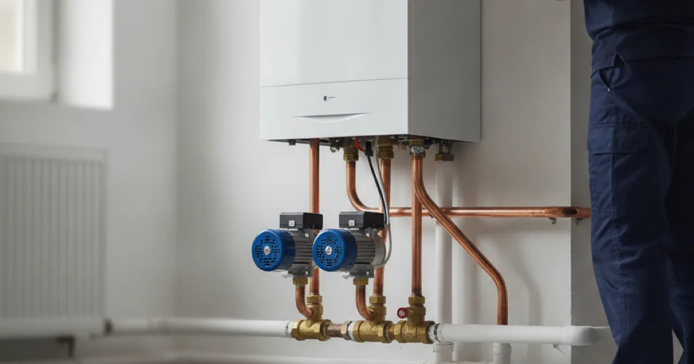

Boiler Installation in Westchester County, NY
A reliable boiler keeps your home warm through cold Westchester winters. Dan's Drains installs and replaces boilers with proper sizing and clean connections, so you get steady heat and efficiency.
- Licensed & Insured
- Same-Day Service Available
- Upfront Pricing
- 15+ Years Local Experience

Need a plumber in Westchester County? We can usually help the same day.
How We Install a Boiler
We assess your home's heating needs, remove the old boiler, and install and connect the new unit with proper piping, venting, and controls. Then we test the system to confirm it heats evenly and runs safely.
Because a boiler ties into your gas or fuel supply, we handle the connection carefully and coordinate any needed gas line updates for the new unit.
Sizing a Boiler Correctly
An oversized boiler wastes fuel and cycles on and off; an undersized one struggles on the coldest days. We size the unit to your home's actual heating load, not a rough guess.
Getting this right is the difference between even, efficient heat and a system that runs constantly and still leaves cold rooms.
Talk to a local Westchester County plumber today.
What Affects Boiler Cost
Boiler installation pricing depends on:
- The type and efficiency of the boiler you choose.
- Your home's size and heating load.
- Whether existing piping and venting can be reused.
- Any controls or safety upgrades required.
We provide the full price up front, before any work begins.
Boilers in Older Westchester Homes
Many homes in this area were built with boiler heat and finished basements where the mechanicals live. Replacing an aging boiler is a good chance to gain efficiency and reliability before the coldest months hit.
The ENERGY STAR boiler information is a useful efficiency reference, and we help you weigh those ratings against what fits your home and budget.
When to Call a Pro
Boiler work involves heat, fuel, and pressurized water, so it is a job for a licensed plumber. Call us when your boiler is old, unreliable, or no longer keeping the house warm.
If you also want to protect the basement where it lives, ask about pairing the install with a reliable basement sump pump.
Frequently Asked Questions
How do I know if my boiler needs replacing?
Frequent repairs, uneven heat, rising fuel bills, or an age past 15 to 20 years are all signs. We give you an honest assessment of whether a repair or a new boiler makes more sense.
Will a new boiler lower my heating bills?
A modern, properly sized boiler is usually more efficient than an old one, which can reduce fuel use. How much depends on your home and the unit you choose.
How long does a boiler installation take?
A straightforward replacement often takes a day or two. A more involved job with new piping or venting takes longer, and we give you a realistic schedule up front.
Can you reuse my existing radiators and piping?
Often, yes, if they are in good condition and compatible with the new boiler. We check before reusing them so the new system performs as it should.
Is boiler installation safe to do myself?
No. It involves fuel, venting, and pressurized water, and mistakes can be dangerous. It should always be done by a licensed professional.
Ready to book? Reach Dan’s Drains for fast, upfront plumbing help.